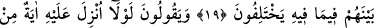
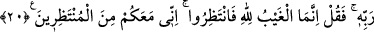

İNSANLARIN İHTİLÂFI
18. Onlar, Allah’ı bırakıp kendilerine ne zarar, ne de yarar verebilecek şeylere
tapıyorlar ve: “Bunlar Allah katında bizim şefâatçilerimizdir!” derler. De ki:
“Allah’ın göklerde ve yerde bilmediği bir şeyi mi haber veriyorsunuz?” O, onların
koştukları ortaklardan münezzeh ve yücedir.
19. İnsanlar sadece bir tek ümmettiler. Sonra ayrılığa düştüler. Eğer Rabb’inden
bir söz geçmemiş olsaydı, ayrılığa düştükleri konuda hemen aralarında hüküm
verilir (işleri bitirilirdi).
20. “Ona Rabb’inden bir mucize indirilmeli değil mi?” diyorlar. De ki: “Gayb
ancak Allah’a mahsustur.
O halde bekleyin, ben de sizinle beraber bekleyenlerdenim.”
“Onlar” yani Mekke kâfirleri “Allah’ı bırakıp,” yani Allah’a kulluğu tamamen terk
etmek mânâsına değil de O’na ibâdetle yetinmemek mânâsında ve O’na ibâdeti putlara
ibâdete yakın tutmak sûretiyle Allah’ı terk edip “kendilerine ne zarar ne de yarar
verebilecek şeylere tapıyorlar”
Yâni onlara tapınmayı bıraktıkları takdirde, kendilerine bir zarar ulaştırmaya
kudretleri olmayan ve onlara tapındıklarında da kendilerine bir fayda ulaştırmayan
putlara tapıyorlar. Halbuki cansızlar böyle şeylerden uzaktır. Mâbûd olanın ise sevap ve
cezâ veren bir zât olması gerekir ki ona ibâdet bir fayda sağlasın yahut bir zararı
defetsin.
“ve: “Bunlar” putlar “Allah katında bizim şefaatçilerimizdir!” derler.” yâni, onlar
âhireti kabul etmedikleri için “Putlar, önemli dünya işlerimizde bize şefaat ederler.”
yahut “Eğer âhirette diriliş varsa onlar bize orada şefaat ederler.” derler.
Nitekim Kâşifî şöyle der: “(Müşrikler derler ki:) Mü’minlerin inandığı gibi haşr ve
neşrin var olduğu farz olunsa bu putlar bize Cenâb-ı Hak’dan şefaat talep ederler ve
bizi azabdan kurtarırlar.”